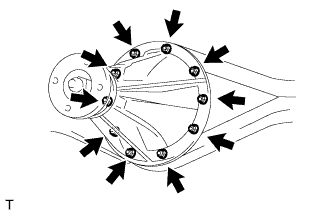
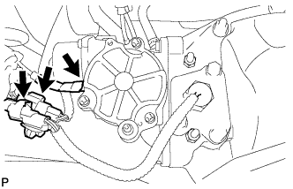
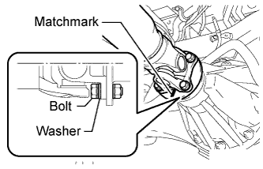
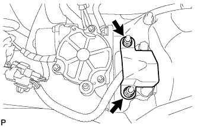
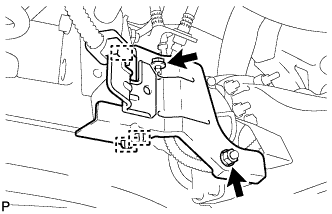

REAR DIFFERENTIAL CARRIER ASSEMBLY (w/ Differential Lock) > INSTALLATION |
| 1. INSTALL REAR DIFFERENTIAL CARRIER ASSEMBLY |
 |
Install a new gasket.
Install the differential carrier with the 10 washers and 10 nuts.
 |
Connect the differential lock shift actuator and No. 4 transfer indicator switch clamps.
Connect the breather hose.
| 2. CONNECT PROPELLER SHAFT ASSEMBLY |
 |
Align the matchmarks on the yoke and differential flange.
Connect the propeller shaft with the 4 bolts, 4 washers and 4 nuts.
| 3. INSTALL REAR DIFFERENTIAL LOCK ACTUATOR PROTECTOR |
 |
Install the protector with the 2 nuts.
| 4. INSTALL DIFFERENTIAL PROTECTOR ASSEMBLY |
 |
Attach the protector with the bolt and nut.
Connect the 2 connector clamps and wire harness clamp.
| 5. INSTALL REAR AXLE SHAFT |
Install the rear axle shaft (Click here).
| 6. ADD DIFFERENTIAL OIL |
 |
Add differential oil so that the oil level is between 0 to 5 mm (0 to 0.197 in.) from the bottom lip of the differential filler plug hole.
| Item | Oil Type and Viscosity |
| w/o LSD | Toyota Genuine Differential gear oil LT 75W-85 GL-5 or equivalent |
| w/ LSD | Toyota Genuine Differential gear oil LX 75W-85 GL-5 or equivalent |
| Item | Specified Condition |
| Standard | 4.15 to 4.25 liters (4.39 to 4.49 US qts., 3.66 to 3.74 Imp. qts.) |
| w/ LSD | 4.10 to 4.20 liters (4.34 to 4.43 US qts., 3.60 to 3.69 Imp. qts.) |
| w/ Differential lock |
for Front Differential:
Using a 10 mm hexagon wrench, install a new gasket and the filler plug.
Install the engine under cover.
for Rear Differential:
Install a new gasket and the filler plug.